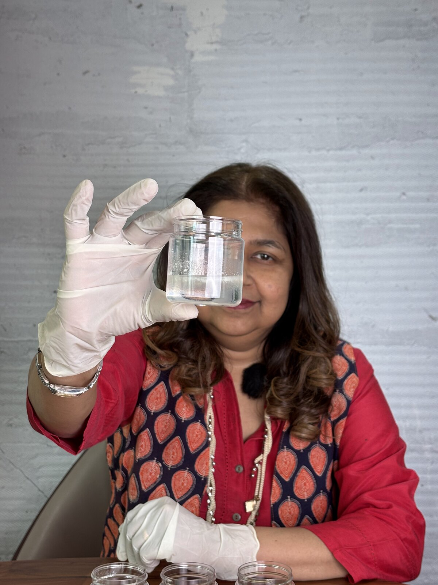

Endometriosis is far more than "bad periods". It is a chronic condition in which tissue similar to the lining of the uterus grows outside it, and for many women its effects reach into work, relationships, fertility and mental health. Understanding that wider impact is the first step toward managing it well.
The hallmark of endometriosis is pain — often during periods, but also between them, during or after intimacy, and sometimes with passing urine or stool. Because the symptoms overlap with so many other conditions, and because period pain is so often normalised, a diagnosis can take years. That delay is one of the most frustrating parts of the condition for the women I see.
The hidden, everyday burden
What rarely gets discussed is how the condition wears on daily life. Unpredictable flare-ups make it hard to plan. Fatigue can be profound. Persistent pain affects sleep, mood and concentration, and the toll on mental health is real. Many women describe feeling unheard — which is why being taken seriously matters as much as any prescription.
Practical ways to cope
1. Track your symptoms
Keeping a simple diary of pain, periods, energy and triggers helps you spot patterns and gives your doctor far more to work with than memory alone.
2. Work with, not against, your cycle
Where possible, plan demanding tasks around the days you tend to feel better, and build in rest around predictable flare days. Gentle movement such as walking, stretching or yoga helps many women, even when intense exercise does not.
3. Mind nutrition and stress
While no diet cures endometriosis, an anti-inflammatory pattern — plenty of vegetables, fruit, whole grains and healthy fats — helps some women feel better day to day. Stress management, good sleep and breathing or relaxation practices can also ease how pain is experienced.
4. Use a clear pain-relief plan
Rather than reaching for painkillers haphazardly, agree a structured plan with your doctor so you know what to take, when, and what to do when it is not enough.
Endometriosis is best handled as a long-term partnership with a clinician who knows your history. Medical treatment, hormonal options and — when appropriate — well-planned excision surgery can all play a part. The right mix is personal.
When to seek help
Please don't accept pain that disrupts your life as something you simply have to endure. If period pain regularly keeps you from work or daily activities, if intimacy is painful, or if you are struggling to conceive, these are good reasons to be properly assessed. Early, expert care can protect both your quality of life and your fertility.
- ✓ Endometriosis affects work, relationships, fertility and mental health — not just periods.
- ✓ Tracking symptoms helps you and your doctor manage it more effectively.
- ✓ Movement, nutrition, stress care and a clear pain plan all help day to day.
- ✓ Pain that disrupts life is a reason to be assessed — not to suffer in silence.
Key takeaways
This article is for general education and is not a substitute for personalised medical advice. If endometriosis is affecting your life, please consult a qualified gynaecologist.
Living with endometriosis pain?
Dr. Sudeshna Ray offers thorough, compassionate assessment and a plan tailored to you.
Book an Appointment